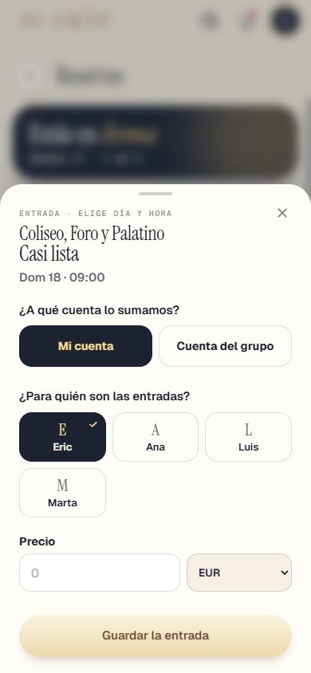
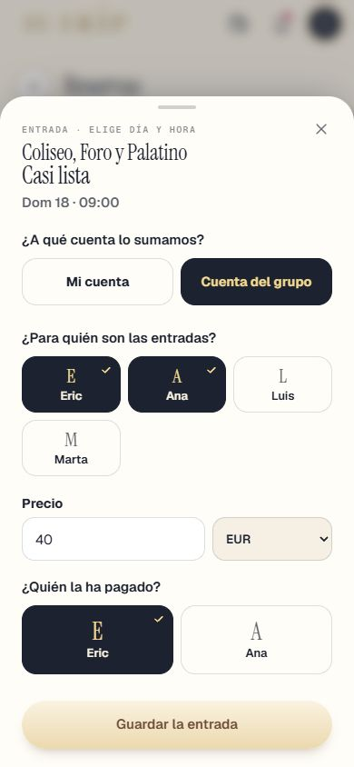
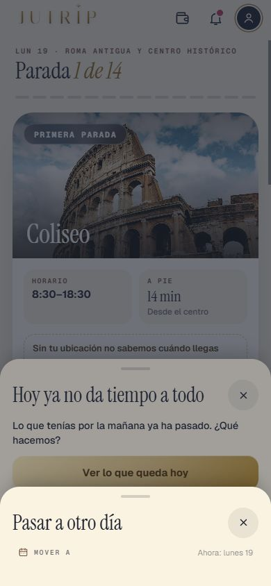
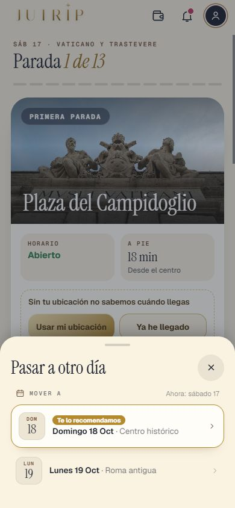
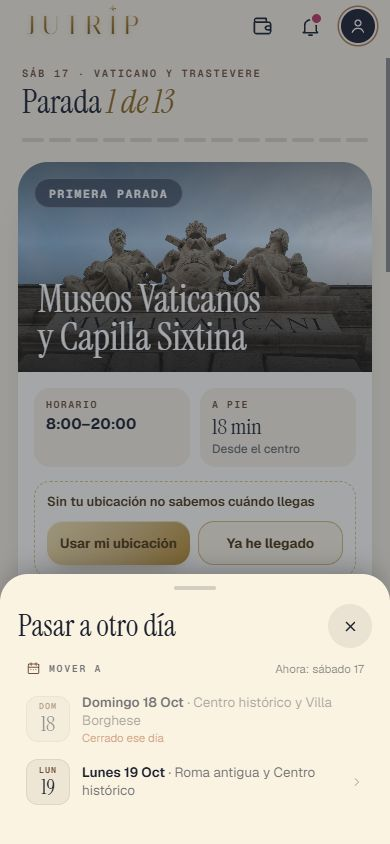
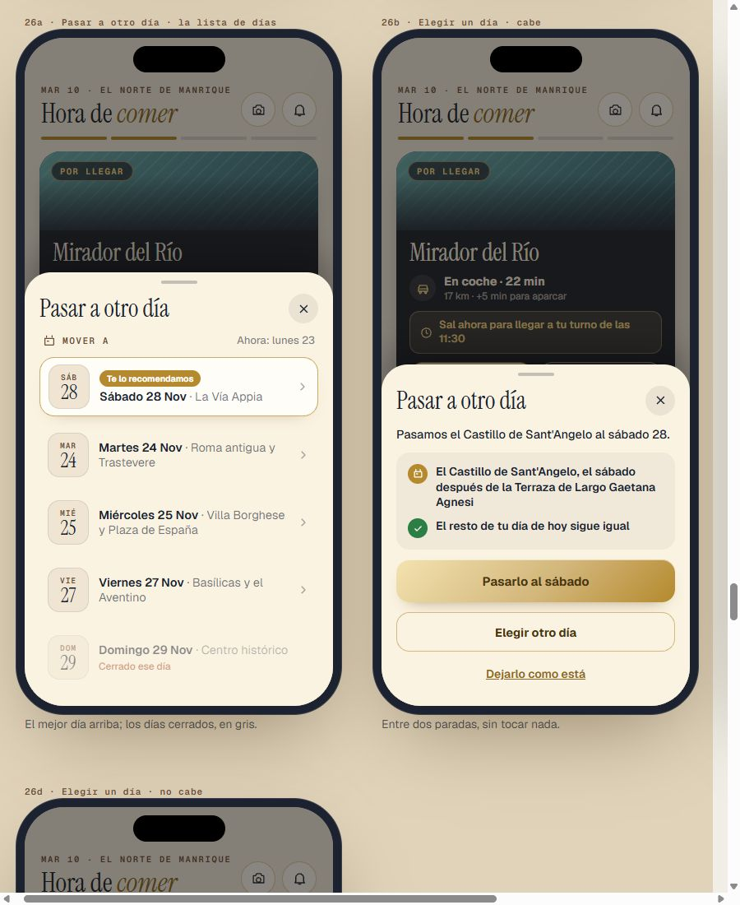
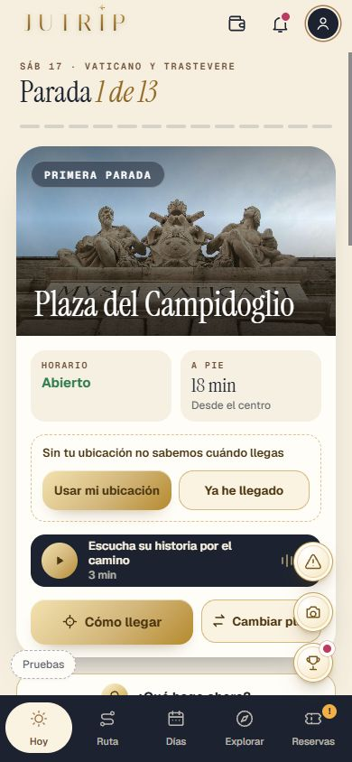

Lo que queda por decidir o no se ha podido hacer está en docs/dias/DECISIONES_V46.md. Capturas en tamaño iPhone (390 × 844).
La V45 lo quitó porque no estaba en el dibujo; era un error. Ahora está en «Casi lista», con quien la añade marcado (y desmarcable). Si de cuatro amigos solo dos van al Vaticano, la entrada sale solo en la ruta de esos dos y el gasto se reparte solo entre ellos.


Antes salía el lunes 23 siendo martes 24. Ahora solo salen días posteriores a hoy. El recomendado va como el dibujo 26a.




Sin ubicación: 18 min · Desde el centro (este viaje de pruebas no tiene alojamiento, así que se cuenta desde el centro de su zona; con alojamiento pone «Desde el alojamiento»). Antes ponía «—» y «Del alojamiento a la Plaza del Campidoglio». «Abierto» en verde; el horario real va en negro y «Cerrado» en rojo.

De dónde venía el retraso: la línea sale de una pregunta al servidor que solo se hacía al llegar; hasta que contestaba, la línea no existía y luego empujaba lo de debajo. Ahora se pregunta en cuanto la parada es la siguiente y se guarda en memoria, así que al llegar sale a la vez que la tarjeta. (No hay captura: depende del tiempo de red; lo vigila la prueba de código.)
=== pruebaTanda10N_reservas exit=0 Prueba de la Tanda 10N (D1, RESERVAS del invitado): 45 comprobaciones · 0 fallos === pruebaTanda10N10_reservas exit=0 52 comprobaciones, 0 fallos === pruebaTanda10N8_reservas exit=0 24 comprobaciones, 0 fallos === pruebaTanda10S8_D exit=0 83 comprobaciones, 0 fallos === pruebaTanda10S8_C exit=0 107 comprobaciones, 0 fallos === pruebaTanda10S5_L exit=0 78 comprobaciones, 0 fallos === pruebaTanda10S7_T exit=0 86 comprobaciones, 0 fallos FIN === pruebaV43 exit=0 Prueba de la V43 · 41 comprobaciones · 0 fallos === pruebaV44 exit=0 Prueba de la V44: 43 comprobaciones · 0 fallos === pruebaV36_cliente exit=0 Prueba de la Tanda V36 (cliente): 28 comprobaciones · 0 fallos === pruebaTandaHOY1_A exit=1 103 comprobaciones · 1 fallos ✗ [LZ] el viaje de Eric en Lanzarote existe (Roma) === pruebaTandaHOY1_C exit=1 === pruebaTandaHOY2_A exit=1 20 comprobaciones · 1 fallos ✗ [LZ] el viaje de Eric en Lanzarote existe === pruebaTandaHOY2_B exit=1 === pruebaTandaHOY2_C exit=1 === pruebaTandaHOY2b_E exit=1 === pruebaV2Hoy exit=1 === pruebaV36C exit=0 Prueba de la Tanda V36C: 122 comprobaciones · 0 fallos FIN === pruebaTandaHOY1_A exit=0 116 comprobaciones · 0 fallos === pruebaTandaHOY1_C exit=0 124 comprobaciones · 0 fallos === pruebaTandaHOY2_A exit=0 86 comprobaciones · 0 fallos === pruebaTandaHOY2_B exit=1 126 comprobaciones · 3 fallos ✗ [26a lista] con los otros días (1) ✗ [26b lista] con los otros días (1) ✗ [26c lista] con los otros días (1) === pruebaTandaHOY2_C exit=0 132 comprobaciones · 0 fallos === pruebaTandaHOY2b_E exit=0 142 comprobaciones · 0 fallos === pruebaV2Hoy exit=1 La prueba V2 (HOY): 149 comprobaciones · 3 fallos FALLO [cerrado] el aviso de abajo: «… ya ha cerrado · la tienes en Lugares pendientes» () FALLO [pedazos] Roma a pie: «Plaza de San Pedro» dice «Aquí ganas 2 pedazos: «El país más pequeño del mundo» y «La Roma de Bernini»» FALLO [pedazos] Roma: en la Plaza de San Pedro sale «Aquí ganas 2 pedazos: «El país más pequeño del mundo» y «La Roma de Bernini»» FIN === pruebaV45 exit=0 Prueba de la V45: 54 comprobaciones · 0 fallos === pruebaV45_mapa exit=0 45 comprobaciones, 0 fallos === pruebaV46 exit=0 Prueba de la V46: 40 comprobaciones · 0 fallos FIN === pruebaV46 exit=0 Prueba de la V46: 45 comprobaciones · 0 fallos === pruebaV44 exit=1 FALLO [aeropuerto] en el aeropuerto, el tiempo del plan «Del … a …» (A PIE 7 min Desde los Museos Vaticanos y Capilla Sixtina) Prueba de la V44: 43 comprobaciones · 1 fallos ✗ [aeropuerto] en el aeropuerto, el tiempo del plan «Del … a …» (A PIE 7 min Desde los Museos Vaticanos y Capilla Sixtina) === pruebaV43 exit=0 Prueba de la V43 · 41 comprobaciones · 0 fallos === pruebaV36_cliente exit=0 Prueba de la Tanda V36 (cliente): 28 comprobaciones · 0 fallos === pruebaV45 exit=0 Prueba de la V45: 54 comprobaciones · 0 fallos FIN === pruebaV2Hoy exit=1 La prueba V2 (HOY): 149 comprobaciones · 2 fallos FALLO [avisos] Roma a pie: un solo aviso abajo: «Parada saltada · la tienes en Lugares pendientes», sin [Deshacer] (Parada saltada. Basílica de San Pedro ya ha cerrado · las tienes en Lugares pendientes Deshacer) FALLO [cerrado] el aviso de abajo: «… ya ha cerrado · la tienes en Lugares pendientes» () === pruebaTandaHOY2_B exit=0 126 comprobaciones · 0 fallos === pruebaTandaHOY1_A exit=1 116 comprobaciones · 1 fallos ✗ [H1] «De la parada de antes a esta» (A PIE 7 min Desde los Museos Vaticanos y Capilla Sixtina) === pruebaTandaHOY1_C exit=0 124 comprobaciones · 0 fallos === pruebaTandaHOY2_A exit=0 86 comprobaciones · 0 fallos === pruebaTandaHOY2_C exit=0 132 comprobaciones · 0 fallos === pruebaTandaHOY2b_E exit=0 142 comprobaciones · 0 fallos FIN === pruebaV2Hoy exit=1 La prueba V2 (HOY): 149 comprobaciones · 1 fallos FALLO [cerrado] el aviso de abajo: «… ya ha cerrado · la tienes en Lugares pendientes» () === pruebaV44 exit=0 Prueba de la V44: 43 comprobaciones · 0 fallos === pruebaTandaHOY1_A exit=0 116 comprobaciones · 0 fallos FIN === pruebaJutrip exit=0 Prueba de JUTRIP: 130 comprobaciones · 0 fallos FIN